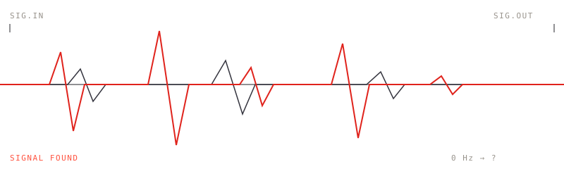
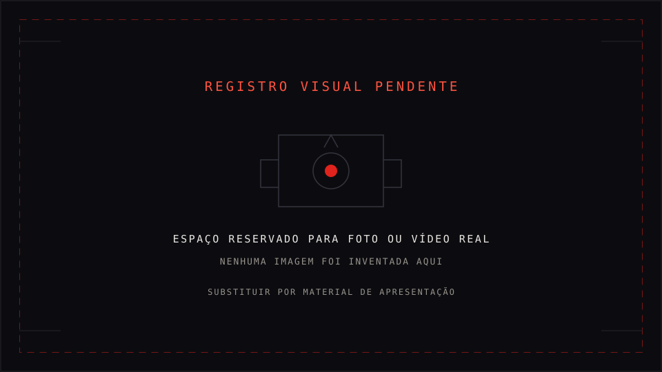

01
DJ Set
Monto o set para a pista, mas com margem para improvisar: músicas coringa, alternativas e caminhos diferentes conforme o público responde.
// Sinal encontrado · em operação
Não é um gênero, é uma mistura. Às vezes o set começa numa guitarra de Nu Metal, cai num grave de Funk, entra numa batida Automotiva e termina numa textura Industrial. Tem coisa que funciona. Tem coisa que vira aprendizado.
$ whoami
Arthur Rodrigues // Cod Rebel DJ
$ cat identidade
Rock · Nu Metal · Funk · Funk Rock · Automotivo · Industrial · Música eletrônica
$ status --trabalho
▸ 6 apresentações com a Fallen EV Tributo
▸ 2 apresentações como DJ solo
▸ 0 músicas lançadas oficialmente (laboratório criativo)
SIGNAL FOUND

// 01 · Quem eu sou · cod rebel dj
Comecei querendo misturar o que sempre fez parte da minha relação com música: Rock, Funk, música eletrônica, cultura urbana e tecnologia. Uma coisa foi puxando a outra e, quando vi, eu já estava montando set.
Não me interessa ficar preso em um gênero. Posso tocar algo conhecido, fazer um edit, misturar duas referências completamente diferentes ou testar uma ideia que parece absurda até funcionar na pista. A graça está justamente nessa mistura.
No repertório cabe música mais comercial quando ela faz sentido para o evento, mas a identidade continua ligada ao Rock × Funk × Automotivo.
Linkin Park · Korn · Rammstein · Disturbed · Evanescence · MC Lan · Rock Danger · cultura underground, games, internet e música pesada dos anos 2000.
// 02 · Formatos
01
Monto o set para a pista, mas com margem para improvisar: músicas coringa, alternativas e caminhos diferentes conforme o público responde.
02
Além da controladora, uso controlador MIDI, disparo de samples, controle de efeitos e operação de VS.
03
Abertura de show, intervalo e encerramento de apresentação, inclusive tocando junto com bandas.
Também faz sentido em
Festas · bares e casas · eventos temáticos · eventos de rock · festas alternativas · eventos automotivos · apresentações em conjunto com bandas · DJ + performance.
Essa lista não é um catálogo fechado: ela anda junto com o que eu vou fazendo.
// 03 · Situação atual · sem maquiagem
Números e fatos que estão na minha documentação. Nada aqui é estimativa de marketing: é o que existe de verdade hoje.

Por que eu mostro isso
Eu registro o processo, não só o resultado: o que funcionou, o que deu errado e o que eu aprendi errando. Isso diz mais sobre o trabalho do que uma foto de palco sem contexto.
Fontes: Aprendizados · Equipamentos · Shows.
// 04 · Projetos
O Cod Rebel DJ é a frente principal, mas não é a única. Tem coisa que já existe e tem coisa que ainda está no papel. Aqui eu trato cada uma pelo que ela é hoje.
01
Minha frente principal: Rock, Funk e Automotivo na mesma pista.
02
Evento/projeto baseado na mistura de Rock + Funk.
03
Sets autorais montados para a pista e para o que der errado no meio do caminho.
04
Edits, mashups e remixes em teste. Laboratório, nada lançado oficialmente.
05
Projeto paralelo de tributo ao Evanescence. Eu toco como DJ e opero o VS.
06
Status, função e registros de cada um, sem inventar o que ainda não aconteceu.
// 05 · Grimório digital
Aqui está o que eu escrevo sobre o trabalho, publicado sem filtro: identidade, equipamentos, o que eu aprendi apanhando, registro dos shows e tudo o que ainda não deu certo. É caderno de campo, não portfólio editado.
/01
Quem sou, o que eu toco, como eu penso um set e para onde quero ir.
/02
Linha do tempo do que já aconteceu e os próximos objetivos.
/03
Registros das apresentações realizadas e seus formatos.
/04
Controladora, notebook, controlador MIDI, mixer, cabos e o que falta comprar.
/05
Gêneros e referências que atravessam o set.
/06
Projetos paralelos, sets autorais e experimentos.
/07
Projeto paralelo de tributo ao Evanescence: atuação e experiência adquirida.
/08
Roteamento de áudio, limitações de equipamento e lições de palco.
// 06 · Contratar
Casas de show, festas, evento de rock, evento automotivo, festa temática, abertura de show. Qualquer lugar onde Rock e Funk precisem dividir a mesma pista.
// 07 · Apoiar
Meu setup dá conta de tocar, mas ainda não é independente: falta sistema de som, iluminação e microfone. Quem apoia acelera essa parte e acompanha tudo sendo registrado em público.